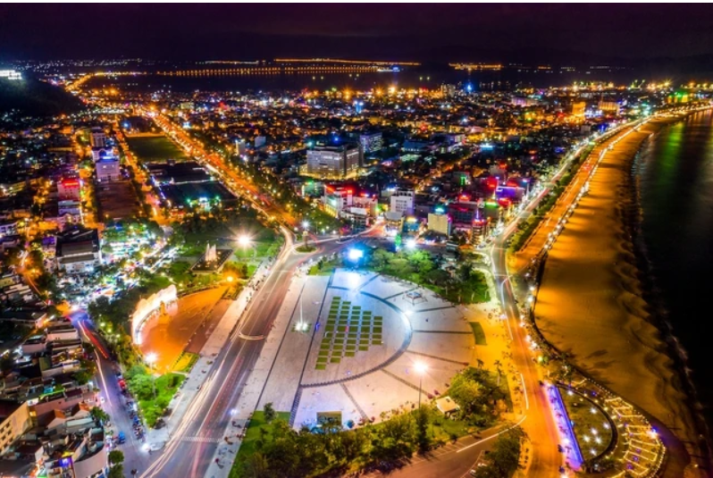

Quy Nhơn sẽ có phố đi bộ ven biển
Ngày 12.3, lãnh đạo UBND TP.Quy Nhơn cho biết UBND tỉnh Bình Định đã thông qua đề án xây dựng phố đi bộ Quy Nhơn. Theo UBND TP.Quy Nhơn, thời gian qua, các cơ quan chức năng đã xây dựng đề án tổ chức phố đi bộ Quy Nhơn để trình UBND tỉnh Bình Định. Đến nay, đề án đã được các cấp thẩm quyền thông qua và cho chủ trương triển khai thực hiện.

Khảo sát cũng chỉ ra các nhà đầu tư ở châu Á - Thái Bình Dương thích tìm kiếm mục tiêu lợi nhuận 2 con số. Họ đang chuyển chiến lược ưu tiên sang tài sản có thể tăng giá trị hoặc tài sản đang có vấn đề về nguồn vốn, buộc phải giảm giá. Trong đó, tuyến phố Nguyễn Thiếp kết nối với quảng trường Nguyễn Tất Thành cùng bãi biển được quy hoạch thiết kế kiến trúc cảnh quan tổ chức các dịch vụ du lịch và tổ chức sự kiện. Tuyến phố Nguyễn Lạc - Trần Độc được định hướng quy hoạch phát triển, kết nối với phố ẩm thực Ngô Văn Sở và khu vực lân cận, hình thành khu du lịch ẩm thực. Còn tuyến phố Đô Đốc Bảo sẽ được trang trí đồng bộ toàn bộ chiều dài dải cây xanh dọc 2 bên đường Đô Đốc Bảo và đường Phạm Hùng, bố trí không gian nghệ thuật kết hợp dịch vụ thương mại. Trước mắt, tuyến phố này sẽ được thực hiện tại khu vực tiếp giáp đường Nguyễn Tất Thành - Đô Đốc Bảo - Hoàng Diệu - Nguyễn Huệ. Ông Ngô Hoàng Nam, Chủ tịch UBND TP.Quy Nhơn, chia sẻ: "Chúng tôi đang chỉ đạo cơ quan chức năng tiếp tục hoàn thiện các thủ tục để ban hành đề án chính thức và bố trí vốn, danh mục đầu tư cơ sở hạ tầng cho phố đi bộ". Ngoài xây dựng phố đi bộ, UBND tỉnh Bình Định còn có kế hoạch xây dựng mới Bảo tàng Tổng hợp tỉnh tại TP.Quy Nhơn. Đồng thời, sẽ có phương án di dời chợ đêm Quy Nhơn đi nơi khác và hoạt động chợ này theo hướng hiện đại, tạo điểm nhấn độc đáo về đêm, nhằm đáp ứng yêu cầu phát triển kinh tế, du lịch của TP.Quy Nhơn.